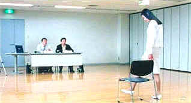
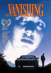

| Audition (SE)/A-, B |
| American Cinematheque/1999/115/WS
1.85 |
Every once in a while a film comes around that
leaves you gaping with slack jaw and open mouth, unable to speak: Audition
is that kind of film. It takes you by surprise. It leaves a disquieting
feeling that there are things in this world you don't want to know about.
This is not an easy film to watch as it takes its severe turns. One should
approach Audition with great trepidation. You need a strong stomach
to get through it all.
Even when Audition is at its most
conventional, it's not conventional. What begins as a standard domestic
drama turns into a haunting romantic tale about the hope for late love for
relatively young widower Aoyama. He finds his "dream girl"
through a theatrical audition set up by a business colleague. Aoyama is
one square guy. He's apparently a dedicated family man. Since his wife's
untimely death years before he has lavished great attention on his one son
and at the same time dedicated himself, or even buried himself, at work.
The embers of normal life have been smothered by the need bury emotions.
But an innocent remark from his son sets him on a path to find a new wife
and everything changes.
 |
|
Audition for a girl in a
white dress. ©American Cinematheque
|
Asami's resume catches at Aoyama's heart even
before he meets her at the audition. She's the girl proverbial in the
white dress. With the introduction of Asami's tale, strangely haunting
from the first, Audition takes on hints of a ghost story. Still,
it's not a ghost story. It's different. It's almost different from
anything I have seen. In the end, I was not quite sure where Audition
took me, only that it took me by the throat with its shocking style.
A thoroughly engrossing film. At times it may
be somewhat confusing, but it is never short of riveting. Audition
is very Japanese in its sensibilities. The overall ghost story
feeling builds like a distorted Noh play. The graphic violence harks
back to some vicious Japanese films of the past like Shohei Imamura's 1979
Vengeance is Mine. Clearly, there are sadomasochistic strands
permeating Audition. And Audition has strong surreal
influences.
Director Takashi Miike is unflinching in his
vision. Characters are well drawn and very interesting even before Audition's
engine revs up with a violent throttle. Certainly the situation is quite
an interesting portrait of loneliness, hopes, and desires. Miike is
audacious is his use of imagery. The way he combines disparate elements
adds up to a unique experience. The pacing is hauntingly even, a most
methodical. When tone changes or when there are surprises, the pacing
still marches forward with same metronome precision. It's almost as if
Aoyama is possessed by some terrible spirit. When the romantic inclination
takes hold of him, he can''t quite control himself. Even when there appear
to be warnings, he ignores them.
The actors are very effective. Ryo Ishibashi is
so plain and mundane as Aoyama. It's a simple convincing
performance. Eihi Shiina is like a delicate flower slowly rotting as Asami
Yamazaki.
Audition does leave itself open to
various interpretations. One can make their own call as to the true
outcome of the film. However, there probably is good evidence to support
one particular ending. What is reality. What is fantasy, dreams,
nightmares?
It's somewhat disappointing that the DVD was not
anamorphic, but the transfer is quite good. It's a clean transfer. There
are no offensive NTSC artifacts like straight edge jitter. Stable image,
stable colors. There is some fine grain delivered very tightly. The Yellow
English titles overlap the image partially and fall into the black
letterbox area thereby preventing use of the zoom feature to blow the
image up to fill a 16 x 9 screen. The Japanese Dolby Digital 5:1 Surround
track was rather on the loud side and I dropped it down about 8 dB to find
a comfortable listening level. Black levels are good, shadow detail is
well executed. The image is sharp. It's very consistent from scene to
scene.
Dennis Bartok and Chris Dee, programmers for the
American Cinematheque, conduct a video interview (Approx 24 minutes) with
Takashi Miike. Miike speaks in Japanese and his comments are translated.
There's also a translated commentary track from Miike that begins at
chapter 18 and lasts for 36 minutes.
Trust me: Audition is not a film that will
be easy to forget. While there are inclinations to turn your head from the
screen, it won't be easy to take your eyes from the screen either. Audition
will remain with you, almost haunting you as Aoyama is haunted. Hopefully,
it will not take possession of you. |
|
|
|

Selections from the Feature
Archive include articles on Akira Kurosawa, Blonde Bimbos, Frank Darabont, Steven Culp, John Herzfeld or Vietnam: The Hollywood Pariah, and many
more....
The Exquisite Muse of Zhang Yimou

The powerful image-making of Zhang Yimou has revealed itself in
virtually every film he has made. Coupled with his remarkable
collaboration with actress Gong Li, Zhang's has built a stunning body of
work Click the image to read all about it.

 Have you visited Home Theater Talk
lately? One of the friendliest places on the Net for Home Theater and DVD
discussion, you can get help for installation problems or simply share
your opinions with other Vidiots. Have you visited Home Theater Talk
lately? One of the friendliest places on the Net for Home Theater and DVD
discussion, you can get help for installation problems or simply share
your opinions with other Vidiots.
 The Cinematheque is a cultural,
arts organization that programs year-round specialty film series at the
newly renovated, landmark 1922 Egyptian Theatre on
Hollywood Boulevard! The Cinematheque is a cultural,
arts organization that programs year-round specialty film series at the
newly renovated, landmark 1922 Egyptian Theatre on
Hollywood Boulevard!

ISF Course Instructors Jim Burns and Kevin Miller are hosting the Digital Film Forum. Join
professionals and enthusiasts for lively home theater discussion.
 Kinoeye Archive Kinoeye Archive
This is a resource of all content-rich materials on the web
relating to Central and East European cinema. The ultimate aim of the
Kinoeye Archive is to provide a near-as-damn-it definitive index of
intelligent and thoughtful English-language analysis of Central and
Eastern European cinema on the web.

Home Vision Cinema
Classic and foreign motion pictures on VHS tape. The title
selection is excellent and informative essays are provided for many
of the films.

DVD links, information about Web specials, news, Site reviews.

Vanishing, The/A,B
Like a perfect short tale from Poe. Not typical fare digested by
American audiences. The Vanishing, a film that ranks with classics of the
genre, must be considered a collectible. In Dutch with English
subtitles.

I just love to watch the FBI Warning and that isn't enough, I am treated
to a graphic designer's wet logo dream.
FBI Warning/
Logo Wars
|